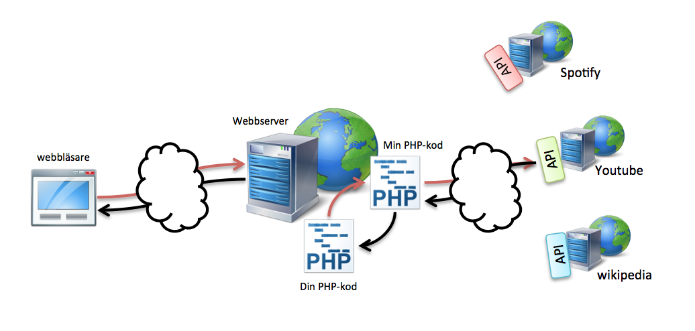

Web Management, 1IK424
Linnéuniversitetet, VT2014
Öppna data & Mashup

- Vad är öppna data?
- Vad är öppen offentlig data?
- Varför öppna data?
- Exempel på öppna data
- Vad är mashups?
- Vad är öppna API:er?
- Exempel på mashup-applikationer
CC By: https://www.flickr.com/photos/kulturarvsprojektet/
Vad är öppna data?
och varför ska vi prata om det?
Data
- Råmaterial för information i t.ex. digitala tjänster
- Struktur i form av bilder, text, siffror där man kan se samband

Öppna data?
Digital information som är fritt tillgänglig utan inskränkningar (t.ex. i form av immaterialrättsliga hinder såsom upphovsrätt och patent).
Definition från: http://www.opengov.se/blogg/2011/oppen-data-definition/


Exempel på öppna data
- Geodata
- Data om tågavgångar, lokaltrafik
- Befolkningsstatistik
- Miljödata, vattenkvalité
- Data om ekonomiska transaktioner
- Väderdata
- Data från företag
CC By: https://www.flickr.com/photos/rh2ox/
Principer för öppna data
- Tillgänglig - Information görs tillgänglig för så många användare som möjligt för så många ändamål som möjligt.
- Maskinläsbar- Informationen är strukturerad på ett sätt som möjliggör maskinell bearbetning och samkörning med andra register.
- Fri - Informationen är tillgänglig för alla utan krav på betalning, eller inskränkningar i form av licensvillkor och registreringsförfaranden.
I ett öppet format: Det format informationen lämnas i följer en öppen standard, alternativt är dokumentationen till fomatet fritt tillgänglig och fri från patentlicensvillkor.
http://opengovdata.org/
Principer för öppna data
- Komplett - Information som inte innehåller personuppgifter eller lyder under sekretess görs tillgänglig i så stor omfattning som möjligt. Detta gäller särskilt databaser med material som skulle kunna vidareförädlas.
- Primär - Information skall så långt det är möjligt tillhandahållas i originalformatet. Bild- och videomaterial skall tillhandahållas i högsta möjliga upplösning för att möjliggöra vidareförädling.
- Aktuell - Information skall tillgängliggöras så snabbt som möjligt så att värdet av den inte försvinner. Det bör finnas mekanismer för att automatiskt kunna få information om uppdateringar.
http://opengovdata.org/
Vad är öppna offentliga data?

"Till främjande av ett fritt meningsutbyte och en allsidig upplysning skall varje svensk medborgare ha rätt att taga del av allmänna handlingar"
Kan man ta betalt för öppna data?
Är all data i offentlig sektor öppen?
Varför öppna data?
Samhällsnyttiga tjänster
- Öppen data för utvecklare ger nya tjänster/applikationer
- Kombinera olika datakällor
- Tillväxt och innovation
- Kommersiella möjligheter - vidareförädling

CC By: https://www.flickr.com/photos/techcrunch/
Demokrati och delaktighet

- Insyn - "Vad händer med mina pengar?"
- Datajournalistik
- Förtroende
- Delaktighet - Förbättra data
- Maximera förutsättningar för kunskap
- Samarbete - Galaxy Zoo
Övrigt
- Struktur och informationskvalité
- PSI-direktivet, PSI-lagen
- Fler fördelar med öppna data?
Risker med öppna data?
Personlig integritet
Lagliga hinder
Exempel - Öppna offentlig data i Sverige
http://www.psidatakollen.se/
Exempel på "app:ar"
http://www.myvote2014.eu/sv/Om/oss
Hur nyttjas öppna data?
- Vad är mashups?
- Vad är öppna API:er?
Mashup
Mashup är en typ av webbapplikation som sammanställer information och funktionalitet från fler av varandra oberoende källor.
http://sv.wikipedia.org/wiki/Mashup
Mashup

Status Board
Mashup - webbtjänster

Mashup - API:er
API - Application Programming Interface
Enkelt för programmerare att komma åt data, oftast i JSON- eller XML-format.
Behöver inte vara gratis

http://sv.wikipedia.org/w/api.php?action=query&list=search&srwhat=text&format=xml&srsearch=kalmar
Exempel
I laborationen


WordPress
Vad är WordPress?
- Startade 2003 som ett "blogging system"
- Används som ett CMS (Content Management System)
- Skrivet i PHP och använder en mySQL-databas
- Fritt och "open source"
- Utbyggningsbart med hjälp av teman, plugins, widgets
Varför använda WordPress?
- Enkelhet
- Fritt att använda
- "It´s more than just a blogging system"
- Teman (och plugin)
- SEO - Search engine optimization
- The Community
Exempel
source: http://wordpress.org/showcase/
https://coursepress.lnu.se/kurs/web-management/
 Detta verk är licensierat under en
Creative Commons Erkännande-IckeKommersiell-DelaLika 3.0 Unported Licens.
Detta verk är licensierat under en
Creative Commons Erkännande-IckeKommersiell-DelaLika 3.0 Unported Licens.